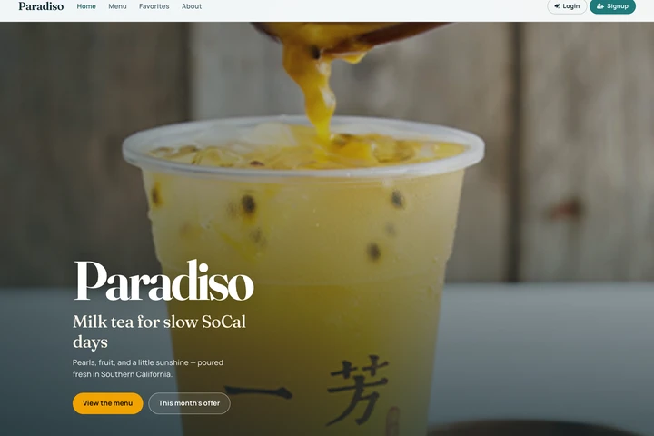
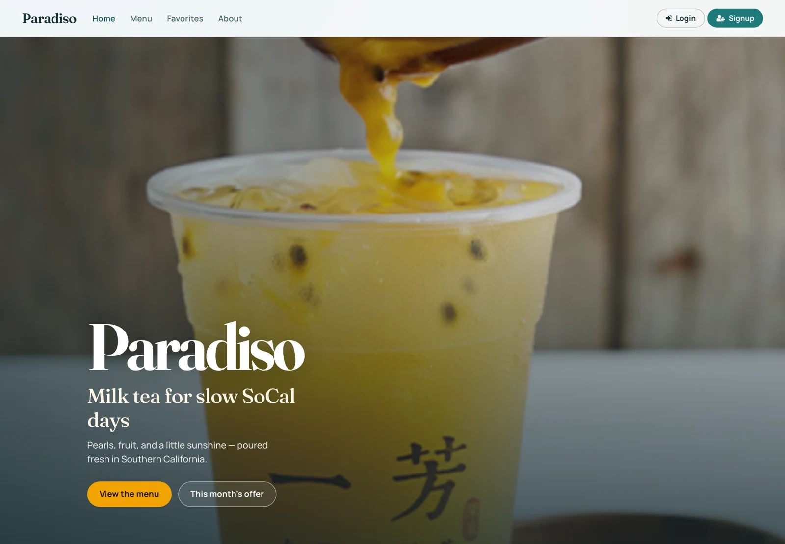
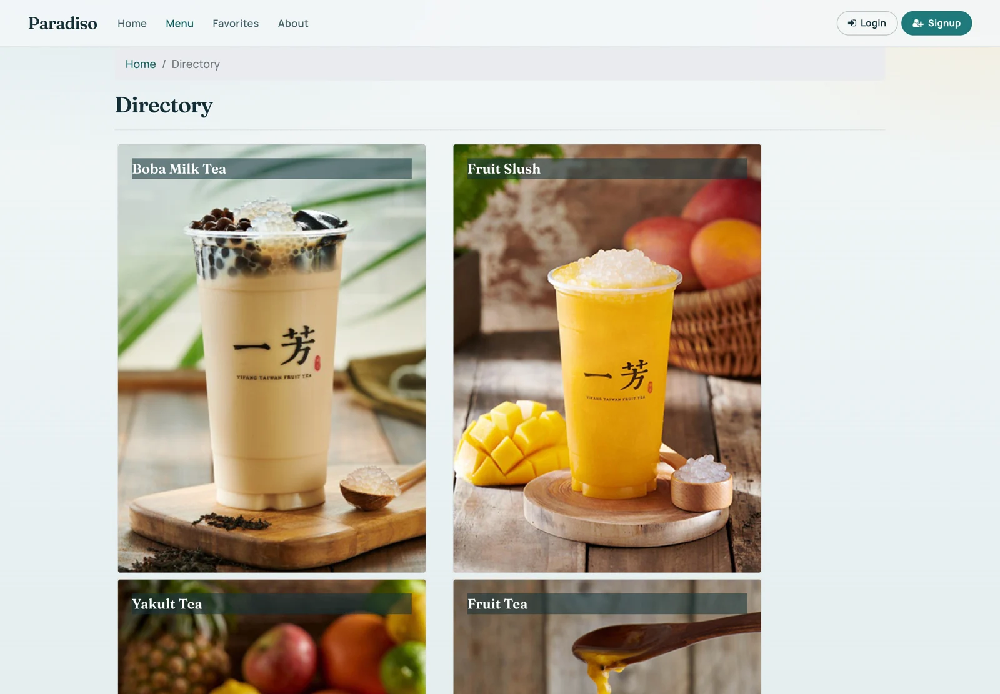
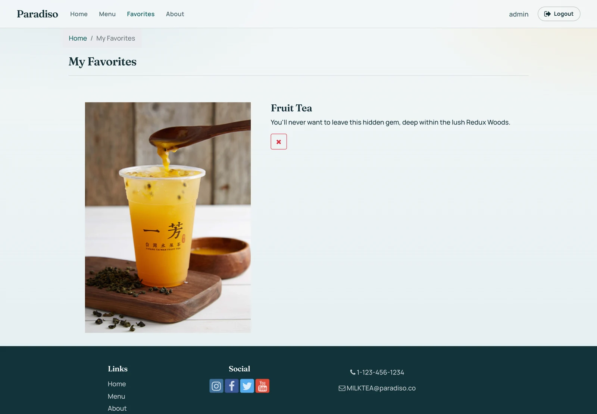
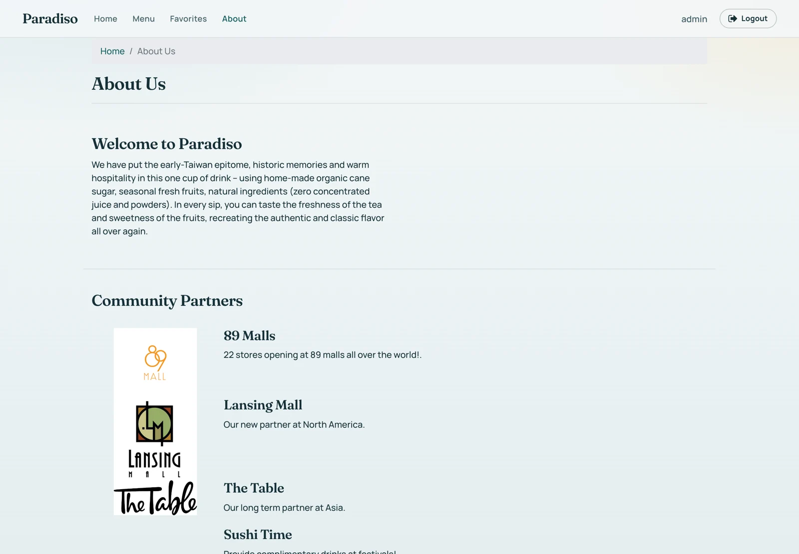

Paradiso
A tea-shop storefront, from first visit to a saved favorite.
A digital storefront for a Southern California boba tea shop. The experience connects a visual drink directory, a brand story, and account-based favorites in one responsive application.
Interface design · Full-stack development
React · Redux · Node.js · Express · MongoDB · Firebase

A storefront with a point of view
The landing page introduces the tea brand through photography, clear navigation, and a direct path to the menu. The visual identity carries through the rest of the customer journey.


Browse, choose, return
A categorized menu makes it easy to explore drinks. Signed-in customers can add and remove favorites, keeping preferred items close for their next visit.




Behind the interface
Reusable React components and Redux manage the frontend experience. An Express and Node.js API connects to MongoDB through Mongoose; Firebase Hosting and Cloud Functions support deployment.

